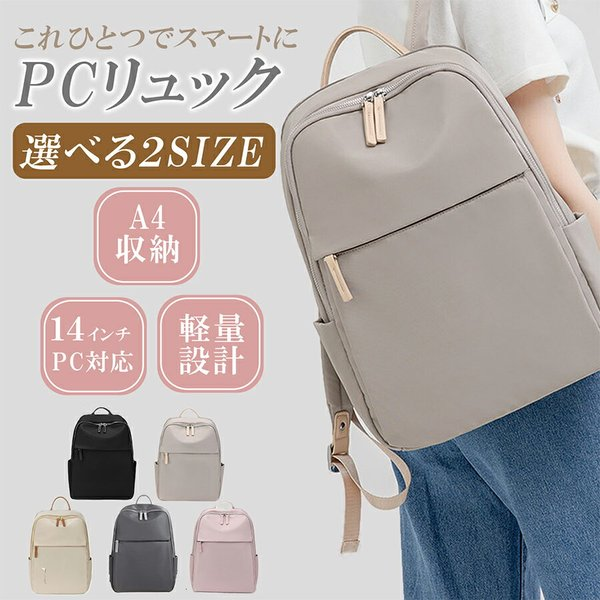
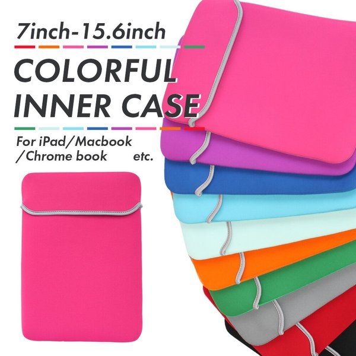
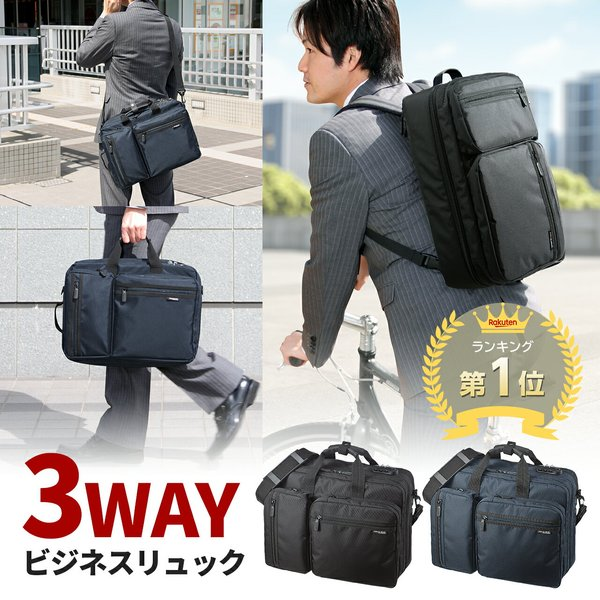
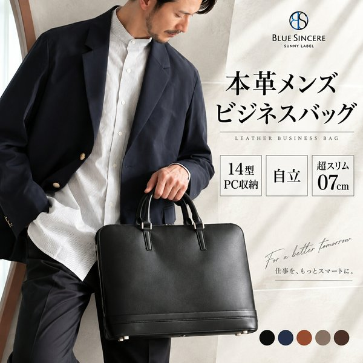
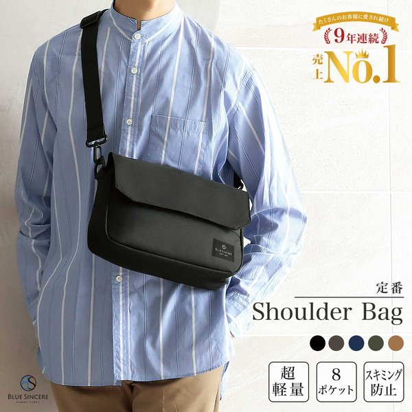
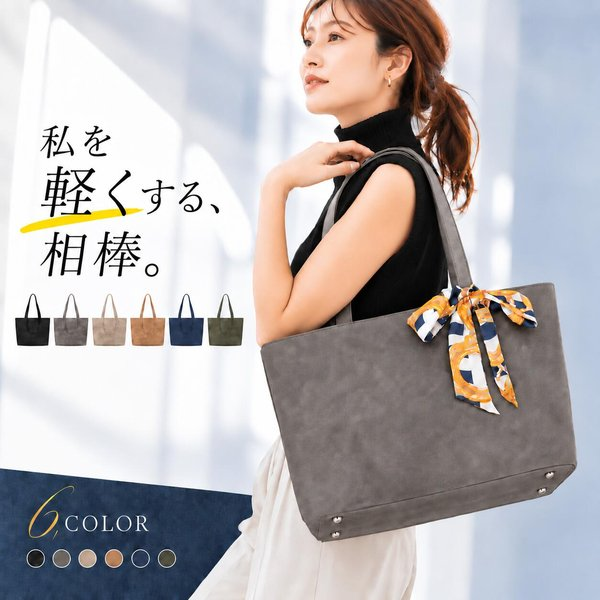
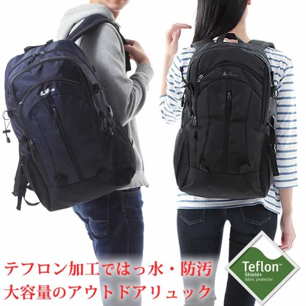
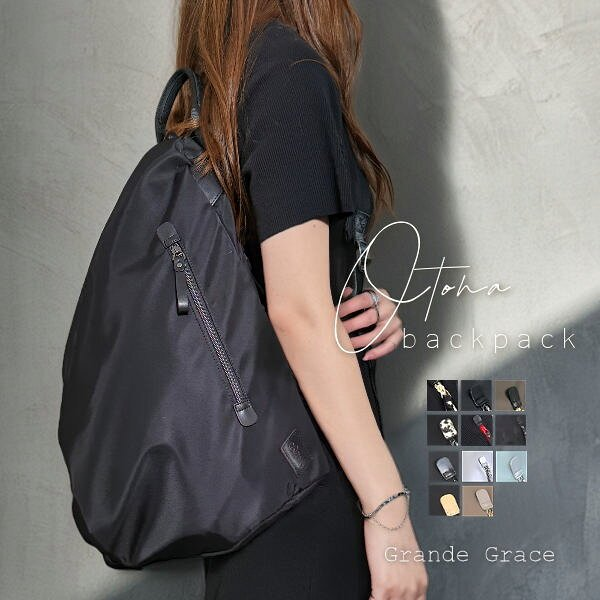
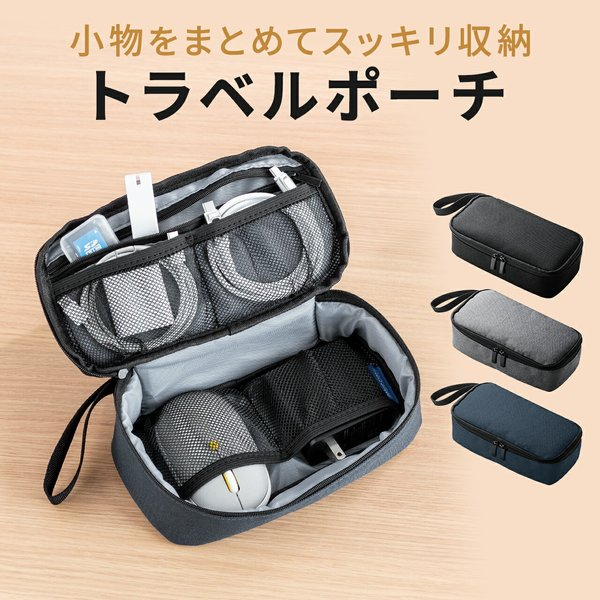

【2026年最新】通勤が劇的にラクになる！ビジネスリュック＆機能性PCバッグ・小物おすすめ10選
通勤の疲れは、実はバッグから来ていることが少なくありません。片肩にかけた重いトートは肩こりの原因になり、PCを裸で持ち歩けば傷と落下のリスクがついてきます。
両肩で背負うリュックに替えるだけでも体感は変わりますし、PCをインナーケースで守れば安心です。持ち方・容量・PC対応の3点で選べば、通勤の負担は確実に減ります。
本記事では、楽天市場で人気のビジネスリュック＆PCバッグ・小物10選を、実売価格とレビュー評価つきで写真付き紹介します。
- おすすめ10選 スペック・特徴比較表
- BEST 1｜バックパック ビジネスリュック 30L
- BEST 2｜レディース ビジネスリュック 軽量・PC対応
- BEST 3｜ノートPC インナーケース 11〜14インチ対応
- BEST 4｜3WAY ビジネスバッグ 15.6インチ対応
- BEST 5｜本革スリム ブリーフケース 14型PC対応
- BEST 6｜超軽量280g ショルダーバッグ 8ポケット
- BEST 7｜トートバッグ A4対応 ファスナー付き
- BEST 8｜テフロン加工 撥水リュック 35L／60L
- BEST 9｜ナイロン リュック 軽量（背面ファスナー）
- BEST 10｜ガジェットポーチ 縦長5ポケット
- 【読者負担0円】買わなくても得する無料サービス
- まとめ：通勤バッグ10選の選び方
| 順位 | 商品名 | ブランド | 最大の特徴・おすすめ理由 | 総合評価 |
|---|---|---|---|---|
| BEST 1 | バックパック ビジネスリュック 30L | エアロスタイル | 30Lの大容量 | 4.61 |
| BEST 2 | レディース ビジネスリュック 軽量・PC対応 | ビジネスリュック（レディース） | 軽量で肩が疲れにくい | 4.57 |
| BEST 3 | ノートPC インナーケース 11〜14インチ対応 | PCインナーケース | 手持ちのバッグに追加できる | 4.38 |
| BEST 4 | 3WAY ビジネスバッグ 15.6インチ対応 | ビジネスバッグ | 3通りに持ち替えられる | 4.32 |
| BEST 5 | 本革スリム ブリーフケース 14型PC対応 | ビジネスバッグ（本革） | 本革で見た目が上質 | 4.61 |
| BEST 6 | 超軽量280g ショルダーバッグ 8ポケット | ショルダーバッグ | 280gの軽さ | 4.51 |
| BEST 7 | トートバッグ A4対応 ファスナー付き | トートバッグ（レディース） | A4とPCが入る | 4.49 |
| BEST 8 | テフロン加工 撥水リュック 35L／60L | 撥水リュック | 撥水・防汚・防油加工 | 4.39 |
| BEST 9 | ナイロン リュック 軽量（背面ファスナー） | グランデグレイス | 軽量ナイロンで扱いやすい | 4.55 |
| BEST 10 | ガジェットポーチ 縦長5ポケット | ガジェットポーチ | 5ポケットで分類できる | 4.53 |
バックパック ビジネスリュック 30L

30Lの大容量ながら、スーツにも合うすっきりした形のビジネスリュック。PC収納とダブルボトルポケットを備え、出張にも通勤にも使えます。荷物が多い日の肩の負担を減らしたい人に向いています。 楽天市場での実売価格は約5,980円（2026年11月時点）。
- 30Lの大容量
- PC収納とボトルポケット
- 撥水素材で急な雨にも
- 荷物が少ない日は大きすぎる
レディース ビジネスリュック 軽量・PC対応

きれいめの見た目で通勤に使えるレディース向けリュック。軽量で、13インチ前後のPCも収納できます。スーツやジャケットに合わせやすいデザインで、手提げバッグからの買い替えにも。 楽天市場での実売価格は約4,180円（2026年11月時点）。
- 軽量で肩が疲れにくい
- PCを収納できる
- きれいめで通勤になじむ
- 大容量の荷物には向かない
ノートPC インナーケース 11〜14インチ対応

手持ちのバッグにPCを入れるためのインナーケース。クッション性があり、11〜14インチまで対応します。リュックやトートをそのまま使いたい人に、一番手軽なPC対策です。 楽天市場での実売価格は約1,180円（2026年11月時点）。
- 手持ちのバッグに追加できる
- クッション性がある
- 1,000円台で揃う
- バッグ自体の防水性能は上がらない
3WAY ビジネスバッグ 15.6インチ対応

リュック・ショルダー・手提げの3通りで使えるビジネスバッグ。15.6インチのPCが入り、マチを広げれば出張の1泊分も入ります。TPOに合わせて持ち方を変えたい人に向いています。 楽天市場での実売価格は約7,980円（2026年11月時点）。
- 3通りに持ち替えられる
- 15.6インチPC対応
- マチ拡張で容量を増やせる
- 切り替えのストラップ収納がやや煩雑
本革スリム ブリーフケース 14型PC対応

厚さ7cmのスリムな本革ブリーフケース。14型のPCと書類を入れてもかさばらず、自立するので置き場所にも困りません。オンライン会議の多い日も、これ一つで足ります。 楽天市場での実売価格は約14,980円（2026年11月時点）。
- 本革で見た目が上質
- 厚さ7cmのスリム設計
- 自立するので扱いやすい
- 本革のメンテナンスが必要
超軽量280g ショルダーバッグ 8ポケット

重さ280gの軽量ボディに8つのポケットを備えたショルダーバッグ。財布・スマホ・モバイルバッテリーを分けて収納でき、斜めがけで両手が空きます。休日の外出や通勤のサブバッグに。 楽天市場での実売価格は約2,999円（2026年11月時点）。
- 280gの軽さ
- 8ポケットで整理しやすい
- 撥水で雨にも強い
- PCは入らないサイズ
トートバッグ A4対応 ファスナー付き

A4の書類とPCが入る、ファスナー付きのレディーストート。自立するので床に置いても倒れず、中身が見えないのが安心です。リュック派でも、客先訪問の日はこれ一つで決まります。 楽天市場での実売価格は約2,999円（2026年11月時点）。
- A4とPCが入る
- ファスナー付きで中身が見えない
- 自立する
- 肩掛けの負担はリュックより大きい
テフロン加工 撥水リュック 35L／60L

テフロン加工で水・汚れ・油をはじくリュック。35Lと60Lから選べ、USB充電ポートも付いています。自転車通勤や雨の日の移動が多い人に向いています。 楽天市場での実売価格は約2,480円（2026年11月時点）。
- 撥水・防汚・防油加工
- USBポート付き
- 35L／60Lから選べる
- ビジネススーツにはカジュアル寄り
ナイロン リュック 軽量（背面ファスナー）

ナイロン素材で軽く、背面ファスナーから荷物を出し入れできるリュック。口折れタイプで形が崩れにくく、通勤にも使えます。服に合わせやすい色展開で、普段使いにも。 楽天市場での実売価格は約6,380円（2026年11月時点）。
- 軽量ナイロンで扱いやすい
- 背面ファスナーで防犯性が高い
- 口折れで形が崩れにくい
- PC用のクッションは別途用意したい
ガジェットポーチ 縦長5ポケット

充電器・ケーブル・モバイルバッテリーをまとめて入れられる縦長ポーチ。5つのポケットで中身が迷子になりません。バッグを替えるたびにケーブルを探す時間がなくなります。 楽天市場での実売価格は約1,580円（2026年11月時点）。
- 5ポケットで分類できる
- 1,500円台で揃う
- バッグの入れ替えがラク
- タブレットは入らないサイズ
この記事の商品を買う前に、まずは無料で得する選択肢をチェック。どれも登録・利用は0円で、無料期間中に解約すれば料金はかかりません。読みたい雑誌がある人、ポイントを貯めたい人、アンケートなら気軽という人、それぞれに合うものを選べます。
初回31日無料・無料期間中に解約すれば0円 → 楽天ポイントモール｜登録無料で毎日ポイ活
買い物なしでもポイントが貯まる無料サービス → 楽天インサイト｜アンケートに答えてポイント
登録無料・すきま時間のアンケートで貯まる → 楽天カード｜年会費永年無料
新規発行・年会費ずっと0円 →
4つのサービスの違いと使い分けは「出費0円で得する！買わずにポイントが貯まる無料サービス厳選4選」でまとめています。
💡 まとめ：通勤バッグ10選の選び方
通勤バッグは、荷物の量と持ち方で選ぶのが基本です。PCと書類が多い日はリュック、客先訪問の日はブリーフケースやトート、休日はショルダーというように、用途ごとに分けると体も楽になります。
楽天市場では「5と0のつく日」や「お買い物マラソン」などのキャンペーンに合わせて購入すると、ポイント還元が最大化してお得に手に入ります。ぜひチェックしてみてくださいね。